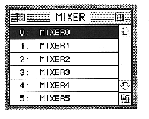
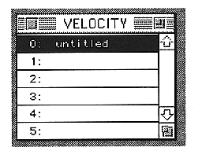
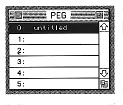

Return to previous page ｜ Return to menu ｜ Go to next page
-
Window menu
- Close each window if it is open and open it if it is closed.
-
Mixer
- Opens and closes the Mixer window.

For the Mixer window, refer to “■ Mixer window” in section 7.
-
Velocity
- Opens / closes the Velocity window.

For details on the Velocity window, refer to “■ Velocity window” in 7. Window.
●PEG
- Opens / closes the PEG window.

For the PEG window, refer to “■ PEG window” in 7. Window.
Return to previous page ｜ Return to menu ｜ Go to next page